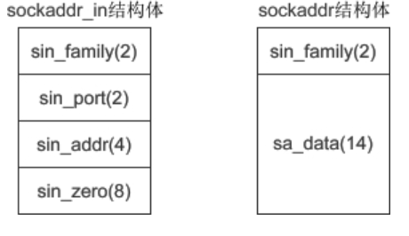

Socket Programming in C
1. 过程
Sever:
初始化DLL
1
int WSAStartup(WORD wVersionRequested, LPSADATA lpWSAData);
wVersionRequested 为 WinSock 规范的版本号，低字节为主版本号，高字节为副版本号（修正版本号）；lpWSAData 为指向 WSAData 结构体的指针。
lpWSAData 调用后的结构体为:
1
2
3
4
5
6
7
8
9
10
11typedef struct WSAData {
WORD wVersion; //ws2_32.dll 建议我们使用的版本号
WORD wHighVersion; //ws2_32.dll 支持的最高版本号
//一个以 null 结尾的字符串，用来说明 ws2_32.dll 的实现以及厂商信息
char szDescription[WSADESCRIPTION_LEN+1];
//一个以 null 结尾的字符串，用来说明 ws2_32.dll 的状态以及配置信息
char szSystemStatus[WSASYS_STATUS_LEN+1];
unsigned short iMaxSockets; //2.0以后不再使用
unsigned short iMaxUdpDg; //2.0以后不再使用
char FAR *lpVendorInfo; //2.0以后不再使用
} WSADATA, *LPWSADATA;对此，我们只关注前两个成员即可。
创建Socket
1
SOCKET socket(int af, int type, int protocol);
- af: Address Family. 表示IP地址的类型， 有 AF_INET(IPV4) 和 AF_INET6(IPV6)
- type: 数据传输方式, 通常有 SOCK_STREAM(connection-oriented) 和 SOCK_DGRAM(connectionless)
- protocol: 传输协议，有 IPPROTO_TCP 和 IPPROTO_UDP。 传入0表示系统自动推断使用UDP还是TCP
绑定Socket
1
2int bind(int sock, struct sockaddr *addr, socklen_t addrlen); //Linux
int bind(SOCKET sock, const struct sockaddr *addr, int addrlen); //Windows- sock: socket文件描述
- addr: sockaddr 结构体变量的指针
- addrlen: addr 变量的大小, 可以使用sizeof() 计算得出
下面的代码, 将创建的Socket与IP 127.0.0.1， port 1234 进行绑定
1
2
3
4
5
6
7
8
9
10//创建套接字
int serv_sock = socket(AF_INET, SOCK_STREAM, IPPROTO_TCP);
//创建sockaddr_in结构体变量
struct sockaddr_in serv_addr;
memset(&serv_addr, 0, sizeof(serv_addr)); //每个字节都用0填充
serv_addr.sin_family = AF_INET; //使用IPv4地址
serv_addr.sin_addr.s_addr = inet_addr("127.0.0.1"); //具体的IP地址
serv_addr.sin_port = htons(1234); //端口
//将套接字和IP、端口绑定
bind(serv_sock, (struct sockaddr*)&serv_addr, sizeof(serv_addr));首先我们需要理解一下sockaddr_in 这个结构体
我们先看一下sockaddr_in 的结构体:
1
2
3
4
5
6struct sockaddr_in{
sa_family_t sin_family; //地址族（Address Family），也就是地址类型
uint16_t sin_port; //16位的端口号
struct in_addr sin_addr; //32位IP地址
char sin_zero[8]; //不使用，一般用0填充
};- sin_family: 就是Address Family
- sin_port: 需要使用htons() 进行转换
- sin_addr: in_addr 的结构体，稍后解释
- sin_zero[8]: 没有用的8个位置
现在让我们看一下in_addr这个结构体:
1
2
3struct in_addr{
in_addr_t s_addr; //32位的IP地址
};in_addr_t 这个类型其实就是4 bytes 的 unsigned long. 就是整数. 但是我们的IP地址是str。 所以我们需要使用inet_addr()将str转换为4bytes的usinged long再赋值给sin_addr.s_addr
这里的 sockaddr_in 结构体里面再嵌套了一个 in_addr 结构体 应该是 历史遗留问题
另一个问题就是为什么使用sockaddr_in而不使用sockaddr呢?
sockaddr 的结构体为:
1
2
3
4struct sockaddr{
sa_family_t sin_family; //地址族（Address Family），也就是地址类型
char sa_data[14]; //IP地址和端口号
};下面的 sockaddr_in 与 sockaddr 的对比:

如果我们直接使用sockaddr 结构体, 我们需要自己完成书写sa_data 中的所有内容，很不方便. 所以后面发明了sockaddr_in 专门服务IPV4. 以及sockaddr_in6 专门服务IPV6.
以下是sockaddr_in6结构体的example:
1
2
3
4
5
6
7struct sockaddr_in6 {
sa_family_t sin6_family; //(2)地址类型，取值为AF_INET6
in_port_t sin6_port; //(2)16位端口号
uint32_t sin6_flowinfo; //(4)IPv6流信息
struct in6_addr sin6_addr; //(4)具体的IPv6地址
uint32_t sin6_scope_id; //(4)接口范围ID
};connect 函数： Client端用来建立连接, 与bind 类似
1
2int connect(int sock, struct sockaddr *serv_addr, socklen_t addrlen); //Linux
int connect(SOCKET sock, const struct sockaddr *serv_addr, int addrlen); //Windows进入被动监听状态
何为被动监听？
被动监听就是:客户端没有请求时, socket 是处于 休眠状态. 只有收到客户端请求以后，socket才会被唤醒来请求响应.
listen() 函数
1
2int listen(int sock, int backlog); //Linux
int listen(SOCKET sock, int backlog); //Windows- sock: 需要进入监听状态的socket
- backlog: 请求队列的最大长度
请求队列(Request Queue)
当套接字正在处理客户端请求时，如果有新的请求进来，套接字是没法处理的，只能把它放进缓冲区，待当前请求处理完毕后，再从缓冲区中读取出来处理。如果不断有新的请求进来，它们就按照先后顺序在缓冲区中排队，直到缓冲区满。这个缓冲区，就称为请求队列（Request Queue）。
缓冲区的长度（能存放多少个客户端请求）可以通过 listen() 函数的 backlog 参数指定，但究竟为多少并没有什么标准，可以根据你的需求来定，并发量小的话可以是10或者20。
如果将 backlog 的值设置为 SOMAXCONN，就由系统来决定请求队列长度，这个值一般比较大，可能是几百，或者更多。
当请求队列满时，就不再接收新的请求，对于 Linux，客户端会收到 ECONNREFUSED 错误，对于 Windows，客户端会收到 WSAECONNREFUSED 错误。
注意：listen() 只是让套接字处于监听状态，并没有接收请求。接收请求需要使用 accept() 函数。
accept() 函数
当socket 处于监听状态时, 可以通过accept() 函数来接收客户端的请求。其原型为:
1
2int accept(int sock, struct sockaddr *addr, socklen_t *addrlen); //Linux
SOCKET accept(SOCKET sock, struct sockaddr *addr, int *addrlen); //Windows参数与listen() 和 connect() 是相同的，不多累赘
accept() 返回了一个新的socket用来和客户端通信, addr 保存了客户端的IP和端口号. 而sock是服务端的socket最后需要说明的是：listen() 只是让套接字进入监听状态，并没有真正接收客户端请求，listen() 后面的代码会继续执行，直到遇到 accept()。accept() 会阻塞程序执行（后面代码不能被执行），直到有新的请求到来。
数据的接收和发送
Linix 下的发送和接收
1
ssize_t write(int fd, const void *buf, size_t nbytes);
1
2
3
4
5ssize_t read(int fd, void *buf, size_t nbytes);
//fd: file description, linux系统中， 一切皆文件, socket也不例外
//buf: 要写入/读取数据的缓冲区地址
//nbytes: 写入数据的字节数
//成功返回读取到的字节数, 失败返回-1WIndows 下的发送和接收
1
2
3
4
5
6int send(SOCKET sock, const char *buf, int len, int flags);
int recv(SOCKET sock, char *buf, int len, int flags);
//sock: 为socket
//buf: 要写入/读取的字节缓冲区地址
//len: 数据的字节数
//flags: 一般为0或NULL,初学者不深究